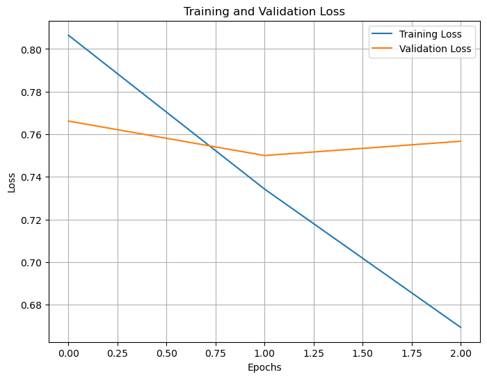
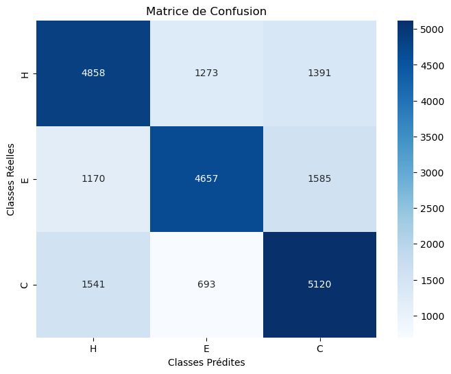
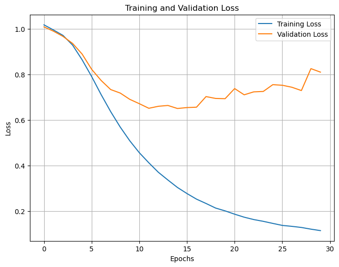
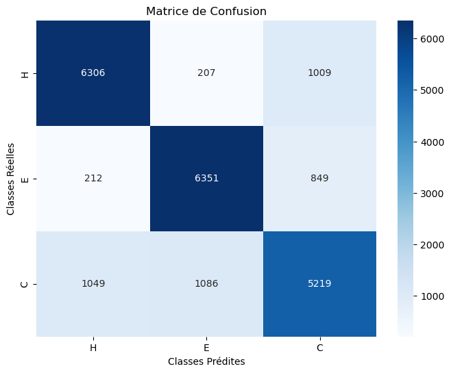
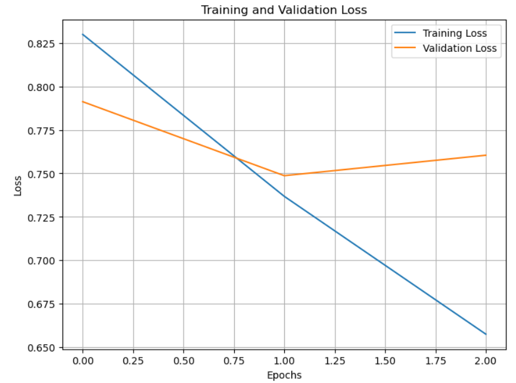
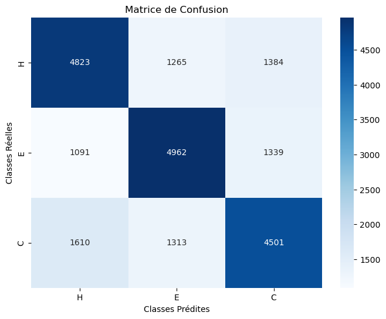

Multy layer perceptron (MLP) to predict secondary structure of protein from amino acide sequences
Introduction
This project aims to predict protein structures using DSSP encoding and Multi-Layer Perceptron (MLP) models. Our work builds upon the seminal article by Burkhard Rost and Chris Sander (Prediction of Protein Secondary Structure at Better than 70% Accuracy, Journal of Molecular Biology, 1993), in which the authors described their implementation of a two-layered feed-forward neural network with a single hidden layer, trained on a database of 130 water-soluble protein chains to achieve over 70% accuracy. Our project differs by utilizing modern deep learning architectures, specifically Keras, and a more comprehensive DSSP database. Moreover, we leverage an NVIDIA GTX 1650 GPU for calculations.
- Keras: Keras is a high-level software library providing a Python interface for artificial neural networks. It acts as an abstraction layer for building and training deep learning models, making it easier for developers and researchers to implement complex architectures without delving into underlying mathematical details. Designed to be user-friendly, modular, and extensible, Keras allows for rapid experimentation and prototyping (Jaya Gupta et al., 2022).
- DSSP: DSSP (Define Secondary Structure of Proteins) is a widely used algorithm and software tool for assigning secondary structure to protein structures based on their three-dimensional coordinates. Developed by Wolfgang Kabsch and Chris Sander in the 1980s, it has become a standard method in structural biology (Shaowen Yao et al., 2017).
Finally, the key steps include:
- Feature extraction from protein sequence files.
- Preprocessing using one-hot encoding and frequency encoding.
- Resampling using SMOTE for class balancing.
- Implementation of the MLP for prediction.
Data Preprocessing and Feature Extraction
The original data file contained protein residue sequences (RES) along with DSSP, DSSPACC (an extension incorporating accessibility information), STRIDE (Structural Identification), and alignment data.
RES:M,F,K,V,Y,G,Y,D,S,N,I,H,K,C,V
DSSP:_,E,E,E,E,E,_,_,T,T,T,S,_,_
DSSPACC:e,b,e,b,b,b,b,e,b,e,b,e,e
STRIDE:C,E,E,E,E,E,C,T,T,T,T,T,T
RsNo:1,2,3,4,5,6,7,8,9,10,11,12,13,14
DEFINE:E,E,E,E,E,E,_,_,_,_,_,_,_
align1:M,F,K,V,Y,G,Y,D,S,N,I,H,K
align2:K,I,E,V,Y,G,I,P,D,E,V,G,R
*Example of aazb-1 protein used in the dataset*Since Keras only processes numerical values, we needed to encode our sequences using one-hot encoding and frequency encoding.
One-Hot encoding : One-hot encoding is a method of converting categorical variables into a binary matrix representation. Since our protein sequences contain 20 residues, each amino acid will be encoded using 20 digits. Gaps and unrecognized amino acids will be encoded with a repetition of 20 zeros. Consequently, a DataFrame that we will use will have a significant size; for a peptide of 13 amino acids, we will have 260 columns.
Frequency encoding : In frequency encoding, we use the proportion of each amino acid to encode the entire protein. The final dataset will be much smaller in size compared to one-hot encoding, with only 20 columns instead of 260.
Furthermore, the corresponding secondary structure will be encoded as follows: {‘H’: 0, ‘E’: 1, ‘C’: 2}. Note that every other character different from H and E will be coded as 2.
The first step is to parse the files to retrieve the needed information and encode the sequences. We created the script Extract_features.py to handle all of the preprocessing. Additionally, if required, this script can perform further sampling via the SMOTE() function from the imbalanced-learn package to balance class proportions.
# Feature extraction example
from Exctract_features import create_dataset
pwd = "./513_distribute"
df1 = create_dataset(pwd, method='ohe', rsp=True) # One-hot encoding with resampling
df2 = create_dataset(pwd, method='freq', rsp=True) # Frequency encoding with resamplingDSSP 0 1 2 3 4 5 6 7 8 9 10 11 12 13 14 15 16 17 18 19 RES
CDAFVGTWKLVSS 2 0.076923 0.0 0.000000 0.076923 0.076923 0.0 0.000000 0.076923 0.0 0.0 0.076923 0.076923 0.0 0.076923 0.0 0.153846 0.076923 0.076923 0.0 0.153846 DAFVGTWKLVSSE 2 0.076923 0.0 0.000000 0.076923 0.000000 0.0 0.076923 0.076923 0.0 0.0 0.076923 0.076923 0.0 0.076923 0.0 0.153846 0.076923 0.076923 0.0 0.153846 AFVGTWKLVSSEN 2 0.076923 0.0 0.076923 0.000000 0.000000 0.0 0.076923 0.076923 0.0 0.0 0.076923 0.076923 0.0 0.076923 0.0 0.153846 0.076923 0.076923 0.0 0.153846 FVGTWKLVSSENF 2 0.000000 0.0 0.076923 0.000000 0.000000 0.0 0.076923 0.076923 0.0 0.0 0.076923 0.076923 0.0 0.153846 0.0 0.153846 0.076923 0.076923 0.0 0.153846 VGTWKLVSSENFD 2 0.000000 0.0 0.076923 0.076923 0.000000 0.0 0.076923 0.076923 0.0 0.0 0.076923 0.076923 0.0 0.076923 0.0 0.153846 0.076923 0.076923 0.0 0.153846
Multi-Layer Perceptron (MLP) Implementation
To implement our model using Keras (in keras_MLP.ipynb), we start by splitting the dataset into training and testing sets using train_test_split(), reserving 20% of the data for testing while ensuring reproducibility with a fixed random state. Next, we convert the target labels into a one-hot encoded format using to_categorical(), which is suitable for classification (the resulting format is 1.,0.,0. for H, 0.,1.,0. for E, and 0.,0.,1. for C).
Our model architecture consists of four dense layers, with the first three employing ReLU activation functions and the final layer using softmax to output class probabilities. We compile the model with the Adam optimizer and categorical crossentropy loss, enabling it to effectively learn and classify inputs based on the provided features. Finally, we added an early stopping mechanism to prevent the model from overfitting.
We tested two architectures: the first one for one-hot encoding and the second for frequency encoding. We maintained the same architecture as the one used for one-hot encoding for the combined DataFrame (one-hot + frequency). The first architecture is simpler compared to the second one and is designed to learn quickly to achieve higher accuracy. Furthermore, we tested various layer densities and learning rates to achieve the results that we will discuss.
early_stopping = EarlyStopping(monitor='val_loss', min_delta=0, patience=15, verbose=1, mode='min')
model = keras.Sequential([
keras.layers.Dense(500, activation='relu'),
keras.layers.Dense(256, activation='relu'),
keras.layers.Dense(128, activation='relu'),
keras.layers.Dense(3, activation='softmax')
])
# For the second and third model we use 5 hiden layers (1000, 500, 500, 256, 128), Relu as activation
opt = keras.optimizers.Adam(learning_rate=0.008) # for frequency encoding we use learning_rate=0.001, the same for the last case
model.compile(optimizer=opt,
loss='categorical_crossentropy',
metrics=['accuracy'])
history = model.fit(X_train, y_train,
epochs=3, batch_size=32,
validation_data=(X_test, y_test),
callbacks=early_stopping)Results and Analysis
We implemented our model in three different ways: with one-hot encoding, frequency encoding, and a combination of both. We evaluated our model to identify which approach performed the best.
One-hot encoding
As mentioned, one-hot encoding generates the largest amount of data for analysis, and our results showed an accuracy of 65.68%. As excpeted, our model learned very quickly; we achieved 60.18% accuracy after the first epoch and stopped after 3 epochs.


Frequency endocing
Even though the DataFrame is smaller, the learning time increases, resulting in a better accuracy of 80.31% after 30 epochs.


Combine
Combining the two datasets for training resulted in a larger DataFrame but a significant drop in accuracy compared to the previous methods. The model performed similarly to the one using one-hot encoding in the sense that it started at around 60% accuracy, but its learning curve varied dramatically throughout the training process. Ultimately, the model clearly overfitted, achieving an accuracy of only 64.10%.


Discusssion and Conclusions
Our three models did not perform the same. One-hot encoding allowed the model to learn very quickly but resulted in low accuracy as a drawback. Frequency encoding yielded the best results, albeit with a relatively long learning time. Finally, combining the two methods led to overfitting in the model. We also observed that precision and recall for each class were quite balanced across all models.
We tested our models using balanced data, but when faced with imbalanced data, accuracy dropped significantly in all cases, with respective accuracies of 60.44%, 60.64%, and 60.49% (with overfitting) for one-hot encoding, frequency encoding, and the combined approach. Ultimately, when unbalanced, the model tended to become overly specific to the majority class.
Suggestions for Further Improvement:
We could have tested an autoencoding model using ProtBERT and the raw amino acid sequences, but we did not do so due to time constraints.